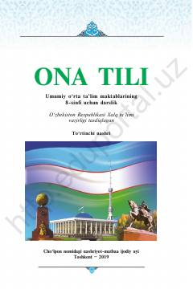

OTUmumiy o'rta ta'lim maktablarining 8-sinfi uchun mo'ljallangan ona tili darsligi.
Mazkur darslik umumiy o'rta ta'lim maktablarining 8-sinf o'quvchilari uchun mo'ljallangan bo'lib, adabiy nutq me'yohlari, so'z boyligi va matn tuzish qoidalarini o'rgatadi. Kitobda o'quvchilarning savodxonligini oshirishga qaratilgan qoidalar, mashqlar va topshiriqlar berilgan.